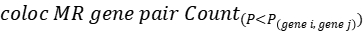
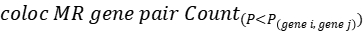

Tutorial
In this chapter, the implementation of each module in MODAS will be introduced in detail, and several real-data results will also be shown in order to help users understand the principles of MODAS in depth. Moreover, a reference pipeline is also provided to help users analyze their own data. The datasets used in this part include a genotype data and a kernel metabolome data from a maize AMP population of 510 inbred lines.
Genotype dimensionality reduction analysis
Necessity and algorithms of genotype dimensionality reduction
Genome-wide association analysis (GWAS) is a common method for identifying quantitative trait loci (QTL). With the rapid development of transcriptome, metabolomics and other high-throughput omics technologies, multi-omics data is gradually used as molecular traits (mTraits) for GWAS analysis. However, GWAS is generally used to analyze a small number of phenotypic traits. In terms of high-dimensional omics data molecular traits, conventional GWAS method is faced with such problems as large computational resource consumption, redundant data and difficult interpretation of analytical results. Generally, the high-dimensional molecular traits datasets include thousands of points, while the genotype datasets include millions of data points. Thus, a key step of association analysis for high-dimensional omics data is to reduce the dimensionality of the data. Due to linkage disequilibrium (LD), there are highly linked SNPs in a population's genotype file, which are highly redundant. We can use dimensionality reduction method to generate a pseudo-genotype file from the original SNP-based genotype file, which can dramatically reduce the dimensionality of genotype data, and improve the efficiency of GWAS to identifying QTLs quickly.
In MODAS, Jaccard similarity coefficient, DBSCAN and PCA algorithms are jointly used for dimensionality reduction of SNP-base genotype data. In general, major allele accounts for a small proportion of heritability, while minor allele is more likely to be risk allele, therefore, the measurement of minor allele similarity can better reflect the functional similarity of SNP loci. In detail, given two SNP loci SNP1 and SNP2, use A to represent the number of minor alleles in all samples for SNP1, and use B to represent the number of minor alleles in all samples for SNP2, then, the ratio of the intersection size of A to B to the size of the union of A and B is defined as Jaccard similarity coefficient J(A,B). The larger J(A,B) value is, the higher the sample similarity is, when both A and B are empty, J(A,B) is defined as zero. Since DBSCAN is a density-based clustering algorithm, it defines the largest set of densely-connected points as clusters, clustering patterns of arbitrary shapes can be found in high-noise spaces. Compared with distance-based clustering algorithms such as K-means, DBSCAN does not need to know the number of clusters in advance, and can find clusters of any shape, as well as remove noise points. While compared with linkage disequilibrium based haplotype and tag SNP method, DBSCAN as a kind of non-supervised machine learning method, can better persist the genotype characteristic of genomic blocks, does not rely on biological parameters and has speed advantage. In addition, as a commonly used linear dimension reduction method, PCA has advantages in speed and accuracy. Thus, to sum up the advantages of these algorithms, Jaccard similarity coefficient distance matrix of minor alleles is used as the input of DBSCAN cluster algorithm to generate genomic blocks, and PCA is used for extract pseudo-genotypes from genomic blocks.
Feasibility of genotype dimensionality reduction
Here, we take a known QTL of metabolite DFP (Wen et al.) as an example to exhibit the feasibility of performing association analysis using pseudo-genotypes generated by dimensionality reduction as input. First, we performed SNP-based GWAS on DFP and get a QTL region between 142MB and 143.5MB on chromosome 1. The Manhattan plot is as follow:

Then, we extracted the SNPs in this genomic region, and calculated the similarity coefficients of pairwise SNPs in the region through the Jaccard similarity coefficient, and then clustered the SNPs in the region through DBSCAN algorithm. The clustering result is as follow:

It can be seen from the figure that there are mainly 4 highly linked blocks in the QTL of DFP. Among them, block3 is significantly related to the content of DFP. Principal component analysis of block3 shows that the first principal component of block3 can represent the genotype difference of all SNPs in block3. Therefore, it is feasible to perform dimensionality reduction analysis on the SNP-based genotypes to generate pseudo-genotypes for association analysis. The SNP-based genotype difference of block3 and the first principal component difference after dimensionality reduction are shown in the figure below.

Generate genome wide pseudo-genotype files
PCA as a dimensionality reduction method for genome-wide genotype data has been widely used in population structure analysis, but it can only reflect the genetic difference on the whole genome level, while the principle of QTL identification is based on specific genomic region difference among individuals in a population. However, segmentation of the whole genome may lead a result that same linkage genomic regions be assigned to different windows, which would reduce the power of association analysis. In order to prevent this situation, a sliding window method is implemented in MODAS to perform dimensionality reduction analysis on the whole genome scale. The parameter for generating genome-wide pseudo-genotype files is -genome_cluster, the parameter for setting the window size is -w, with the default value 1Mb, and the parameter for setting the step size is -s, with the default value 0.5Mb.
The command line is as follows:
# default window and step
MODAS.py genoidx -g ./chr_HAMP -genome_cluster -p 10 -o chr_HAMP
# set window 2MB
MODAS.py genoidx -g ./chr_HAMP -genome_cluster -w 2000000 -p 10 -o chr_HAMP
# set window 2MB step 1MB
MODAS.py genoidx -g ./chr_HAMP -genome_cluster -w 2000000 -s 1000000 -p 10 -o chr_HAMP
In the above command lines, -p specifies the number of chromosomes for dimensionality reduction analysis simultaneously, and the maximum is the number of chromosomes in the dimensionality reduction analysis; -g specifies the plink-bed format genotype file for dimensionality reduction analysis; -o specifies the prefix of the output file. The suffix of the generated output pseudo-genotype files are genome_cluster.csv.
Convert hapmap format to plink-bed format
The input genotype file of MODAS is plink-bed format. Since the hapmap format is also commonly used, MODAS implements a function of converting the hapmap format to plink-bed format. This can be called by the parameter -convert.
The command line is as follows:
# convert hapmap genotype file to plink bed genotype file
MODAS.py genoidx -g ./chr_HAMP.hap -convert -o ./chr_HAMP
# convert hamap genotype file and generate pseudo-genotype file
MODAS.py genoidx -g ./chr_HAMP.hap -convert -genome_cluster -p 10 -o ./chr_HAMP
Generate pseudo-genotype files for a large number of SNPs (~10 million)
When generating pseudo-genotype files for a particularly large number of SNPs (~10 million), it would be very slow. In order to solve this problem, MODAS introduces clumping analysis to retain SNPs that are almost unrelated to each other. In this way, it can not only reduce the size of the genotype file, but also retain the diversity of the population without affecting the subsequent association analysis. This SNP clumping analysis can be called by the parameter -clump.
The command line is as follows:
# clumping analysis
MODAS.py genoidx -g ./chr_HAMP -clump -o ./chr_HAMP
# clumping analysis and generate pseudo-genotype file
MODAS.py genoidx -g ./chr_HAMP -clump -genome_cluster -p 10 -o ./chr_HAMP
The clumping analysis will generate genotype files in plink-bed format with suffixes _clump.bed, _clump.bim, and _clump.fam.
Phenotype preprocessing and transformation
Filter the phenotype data
Phenotype data with high missing rates and low values may reduce the accuracy of association analysis. Two parameters -r and -v can be used to filter the phenotype data based on missing rates and phenotype values, respectively. MODAS considers both NA and 0 to be missing data when calculates missing rates. MODAS filters phenotype values by this criterion: the phenotype whose average value is higher than the threshold is retained, while the phenotype value below this threshold is dropped.
The command line is as follows:
# filter missing rate 0.5
MODAS.py phenorm -phe phe_data.csv -r 0.5 -o phe_data
# filter value lower than 1
MODAS.py phenorm -phe phe_data.csv -v 1 -o phe_data
# filter missing rate 0.5 and value lower than 1
MODAS.py phenorm -phe phe_data.csv -r 0.5 -v 1 -o phe_data
Transform the phenotype data
Omics data generally differ by orders of magnitude and population sturcture, which would lead to inaccurate association analysis results. MODAS supports logarithmization and normalization of the phenotype data to reduce the order of magnitude differences, correct the differences in phenotype caused by population structure through PCA. Different degrees of logarithmization can be performed by calling the parameters -log2, -ln, and -log10. The box-cox method can be used to normalize the phenotype data by calling the parameter -norm, The normal quantile method can be used to normalize the phenotype data by calling the parameter -qqnorm. Correct the differences caused by population structure can by performed by calling the parameters -pca, the genotype file for calculating PCA is specified by parameter -g.
The command line is as follows:
# log2 transformation
MODAS.py phenorm -phe phe_data.csv -log2 -o phe_data
# normal distribution transformation
MODAS.py phenorm -phe phe_data.csv -norm -o phe_data
# normal quantile transformation
MODAS.py phenorm -phe phe_data.csv -qqnorm -o phe_data
# correct phenotype by PCA and normal quantile transformation
MODAS.py phenorm -phe AMP_kernel_transcriptome_v4_FPKM.csv -g chr_HAMP -pca -qqnorm -o AMP_kernel_transcriptome_v4_FPKM_correct
The suffix of the generated normalized phenotype data file is normalized_phe.csv.
Prescreen candidate genomic regions
When using pseudo-genotype files to perform association analysis on high-dimensional omics data, it would still take a very long time using mixed linear model (MLM) directly considering the large genome size, which may make it hard to detect QTLs quickly. To solve this problem, MODAS uses the LM (linear model) + MLM (mixed linear model) method to screen the candidate associated genomic regions for each molecular trait (mTrait). First, MODAS performs association analysis through LM, and screen the genomic blocks whose p-values are smaller than the significance threshold (default is 1 divided by the number of blocks) in the results of the association analysis for each mTrait. Then, MODAS uses MLM to screen the LM screened genomic blocks again using a significance threshold (1e-6 by default), to obtain the candidate significantly associated genomic regions.
This step can be accomplished by the subcommand prescreen in MODAS. Two files with suffixes phe_sig_qtl.csv and sig_omics_phe.csv will be generated, corresponding to the candidate genomic regions and candidate molecular traits, respectively. The prescreen step also need a kinship matrix as input which can be calculated automatically based on the SNP-based genotype file, which is specified by the parameter -g. The -lm_suggest_pvalue parameter is used to specify the significance threshold of the linear model, the -lmm_suggest_pvalue parameter specifies the significance threshold of the mixed linear model, and the -genome_cluster parameter specifies the pseudo-genotype files.
The command line is as follows:
# prescreening candidate QTLs with default parameters
MODAS.py prescreen -g ./chr_HAMP -genome_cluster ./chr_HAMP.genome_cluster.csv -phe ./E3_log2.normalized_phe.csv -o E3_log2
# perscreening candidate QTLs with 20 threads, specifies by -p
MODAS.py prescreen -g ./chr_HAMP -genome_cluster ./chr_HAMP.genome_cluster.csv -phe ./E3_log2.normalized_phe.csv -p 20 -o E3_log2
# set lm significance threshold 1e-3, lmm significance threshold 1e-5
MODAS.py prescreen -g ./chr_HAMP -genome_cluster ./chr_HAMP.genome_cluster.csv -phe ./E3_log2.normalized_phe.csv -p 20 -lm_suggest_pvalue 1e-3 -lmm_suggest_pvalue 1e-5 -o E3_log2
Perform regional association analysis to identify QTLs
Perform regional association analysis on candidate genomic regions
Through the prescreen of pseudo-genotype files, the candidate genomic regions can be obtained, but the accurate boundaries of the QTLs still cannot be obtained. In order to accurately obtain the boundary for each QTL, MODAS performs SNP-based regional association analysis using MLM on these candidate genomic regions, and uses plink clumping analysis to merge the linked (R2=0.2) significant SNPs, to determine the precise boundaries of each QTL. Finally, a QTL with more than 10 SNPs is regarded as a reliable QTL. Since the SNPs in a QTL region cannot accurately reflect the genetic relationship of inbred lines, a SNP-based genotype file is also needed through the parameter -g for kinship matrix calculation.
The command line is as follows:
# identify QTLs with default parameters
MODAS.py regiongwas -g ./chr_HAMP -phe ./E3_log2.sig_omics_phe.csv -phe_sig_qtl ./E3_log2.phe_sig_qtl.csv -o E3_log2
# identify QTLs with 20 threads, specifies by -p
MODAS.py regiongwas -g ./chr_HAMP -phe ./E3_log2.sig_omics_phe.csv -phe_sig_qtl ./E3_log2.phe_sig_qtl.csv -p 20 -o E3_log2
# identify QTLs with p1 = 1e-7 and p2 = 1e-6
MODAS.py regiongwas -g ./chr_HAMP -phe ./E3_log2.sig_omics_phe.csv -phe_sig_qtl ./E3_log2.phe_sig_qtl.csv -p1 1e-7 -p2 1e-6 -p 20 -o E3_log2
The -phe_sig_qtl parameter specifies the candidate genomic regions file, the -phe parameter specifies the candidate traits file, the -g parameter specifies the SNP-based genotype file, the -p1 parameter specifies the significance threshold of index SNPs, the -p2 parameter specifies the secondary significance threshold for clumped SNPs. The regiongwas subcommand generates two files with the suffixes local_gwas_qtl_res.csv and local_gwas_bad_qtl_res.csv, which deposit reliable QTLs and unreliable QTLs, respectively.
The cumulative distribution of significantly associated QTLs/metabolites after regional association analysis is looks like this:

Cluster the molecular traits
In the results of regional association analysis, the QTLs identified by different traits were sometimes overlapped. Principal component analysis can be performed for the traits with overlapped QTLs, and the first principal component PC1 be used for GWAS analysis. As a result, the same QTL could be detected, which indicated that PC1 could replace the original multiple traits to reduce the amount of computing resource. In the process of regional association analysis in MODAS, the -cluster parameter can be added to cluster the traits according to the distance between QTL positions and further reduce the dimension of the molecular traits.
In detail, the steps are as follows: First, when peak SNPs for two traits with a distance less than 2Mb, these traits are clustered. Second, principal component analysis is performed on the cluster and the correlation between the first principal component (PC1) and each trait are calculated. Third, when all traits have correlations greater than 0.6 with PC1 and the number of traits are greater than 2, these traits are clustered; whilst the remaining traits with correlations smaller than 0.6 are subjected to a new round a PCA; then, repeat the steps above until there is no trait remaining or no trait has a correlation greater than 0.6 with PC1, the remaining phenotypes are output separately.
The command line is as follows:
# identify QTLs with 20 threads and cluster molecular traits
MODAS.py regiongwas -g ./chr_HAMP -phe ./E3_log2.sig_omics_phe.csv -phe_sig_qtl ./E3_log2.phe_sig_qtl.csv -p 20 -cluster -o E3_log2
-cluster parameter will generate two files with the suffixes phe_labeled.csv and clustered_phe.csv, which correspond to the cluster label of each traits and the reduced-dimensional traits, respectively.
Perform Mendelian randomization analysis
Mendelian Randomization analysis
Mendelian Randomization (MR) has been successfully applied in human genetics to explain the causal relations among genetic mutations, intermediate phenotypes (e.g., hypertension, hyperlipidemia) and diseases (e.g., stroke, myocardial infarction), rather than only associations. MODAS uses two models for Mendelian randomization analysis. In linear model, z represents the most significantly associated SNP of mTrait detected in RA analysis, x represents the expression level of a mTrait, and y represents the pTrait. Then, a two-step least-squares (2SLS) estimate of the effect of x on y from an MR analysis is:

where bzy and bzx are the least-squares estimates of z on y and x, respectively, and bxy is interpreted as the effect size of x on y free of confounding from non-genetic factors. The sampling variance of the 2SLS estimate is:

where n is the sample size,
 is the proportion of variance in y explained by x, and
is the proportion of variance in y explained by x, and  is the proportion of variance in x explained by z. In mixed linear model, z represents the most significantly associated SNP of mTrait detected in RA analysis, bzy is the estimate of the most significantly associated SNP effect from mixed linear model for pTrait, var(bzy) is the estimate of the most significantly associated SNP standard error from mixed linear model for pTrait, bzx is the estimate of the most significantly associated SNP effect from mixed linear model for mTrait, var(bzx) is the estimate of the most significantly associated SNP standard error from mixed linear model for mTrait, The sampling variance of bxy can be calculated approximately as:
is the proportion of variance in x explained by z. In mixed linear model, z represents the most significantly associated SNP of mTrait detected in RA analysis, bzy is the estimate of the most significantly associated SNP effect from mixed linear model for pTrait, var(bzy) is the estimate of the most significantly associated SNP standard error from mixed linear model for pTrait, bzx is the estimate of the most significantly associated SNP effect from mixed linear model for mTrait, var(bzx) is the estimate of the most significantly associated SNP standard error from mixed linear model for mTrait, The sampling variance of bxy can be calculated approximately as:
Then, we could have a statistic:

to test the statistical significance of bxy, where

The MR analysis in MODAS can be called by the subcommand
mr, using either linear model (LM) or mixed linear model (MLM), with parameters -lm and -mlm, respectively. The command line is as follows:
# lm model
MODAS.py mr -g chr_HAMP -exposure AMP_kernel_transcriptome_v4_FPKM_correct.sig_eqtl.qqnorm.csv -outcome blup_traits_final.new.csv -qtl AMP_kernel_transcriptome_qtl_res.csv -lm -o AMP_kernel_transcriptome_MR_lm
# mlm model
MODAS.py mr -g chr_HAMP -exposure AMP_kernel_transcriptome_v4_FPKM_correct.sig_eqtl.qqnorm.csv -outcome blup_traits_final.new.csv -qtl AMP_kernel_transcriptome_qtl_res.csv -mlm -o AMP_kernel_transcriptome_MR_mlm
MR-based network module identification
To construct the modularized causality network based on the causal relations, MODAS selects the gene pairs with MR effects passing the significance threshold of p value = 0.01. The edge between two connecting genes is represented by a coefficient transformed from the significance level based on the rule:
,
 represents the weight of genei and genej,
represents the weight of genei and genej,  represents the number of gene pairs whose MR effect is less than the MR effect of genei and genej,  represents the number of gene pairs that simultaneously satisfy that the gene pair is colocalized and the MR effect is less than the MR effect of genei and genej. The gene pair colocalization is determined by whether the distance between the gene pair peak snp is less than 1Mb, less than 1Mb indicates that the gene pair is co-localized, otherwise, it is not co-localized.
Then, a table of the gene-gene causality is generated by filter edge with <0.2, followed by applying ClusterONE to construct a modularized causality network. ClusterONE (Clustering with Overlapping Neighborhood Expansion) is a graph clustering algorithm that has been employed in generating overlapping clusters in constructing protein-protein interaction networks. This algorithm is also applicable to modularize a gene causality network, as one gene may participate in more than one regulatory pathway. The positive and negative influence of a gene on a trait may be reflected from the positive and negative values of the MR effect, respectively, which is computed between gene expression level and the phenotypic value of a trait.
represents the number of gene pairs whose MR effect is less than the MR effect of genei and genej,  represents the number of gene pairs that simultaneously satisfy that the gene pair is colocalized and the MR effect is less than the MR effect of genei and genej. The gene pair colocalization is determined by whether the distance between the gene pair peak snp is less than 1Mb, less than 1Mb indicates that the gene pair is co-localized, otherwise, it is not co-localized.
Then, a table of the gene-gene causality is generated by filter edge with <0.2, followed by applying ClusterONE to construct a modularized causality network. ClusterONE (Clustering with Overlapping Neighborhood Expansion) is a graph clustering algorithm that has been employed in generating overlapping clusters in constructing protein-protein interaction networks. This algorithm is also applicable to modularize a gene causality network, as one gene may participate in more than one regulatory pathway. The positive and negative influence of a gene on a trait may be reflected from the positive and negative values of the MR effect, respectively, which is computed between gene expression level and the phenotypic value of a trait.
The MR-based network module identification can be called by the subcommand mr with parameter -net. The command line is as follows:
# network analysis
MODAS.py mr -g chr_HAMP -exposure AMP_kernel_transcriptome_v4_eqtl_sig.csv -outcome AMP_kernel_transcriptome_v4_eqtl_sig.csv -qtl chr_HAMP_kernel_eqtl_new.local_gwas_qtl_res.csv -mlm -p 21 -net -o chr_HAMP_kernel_eqtl_new.local_gwas_qtl_res
Whole genome-wide association analysis and visualization
Query and visualization of the regional association analysis results are not convenient, thus, a GWAS visualization module is implemented in MODAS. This module first performs GWAS and generate whole-genome level Manhattan plots for specified QTLs and traits, and then displays the results through a HTML based web page. The web page interface is divided into two areas: the left area is the navigation bar, and each label corresponds to a different QTL. Users can click on the drop-down button to list the traits of each QTL; the right area is the content page, and users can access the detailed information of each QTL or trait by clicking on the corresponding label in the left area.
The GWAS visualization module in MODAS provides users with an efficient query scheme for a large number of GWAS results, it can be called by the subcommand -visual. The command line is as follows:
# visualization
MODAS.py visual -g chr_HAMP -phe E3_log2.normalized_phe.csv -qtl E3_log2.local_gwas_qtl_res.csv -p 6 -visual -anno maize_genefunc.txt -o E3_log2_visual